about this website
I made this website to analyse the data of the top 250 anime of 2023.
Using this data, I hope to analyse viewers' preferences in terms of
With this analysis, producers are able to better understand the needs and wants of their audience and make content catered to them.


 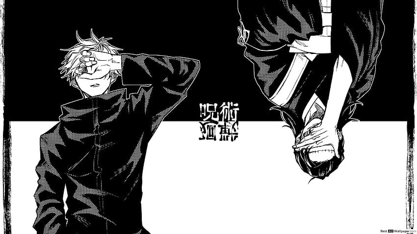
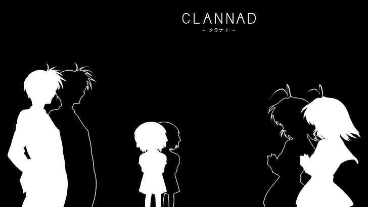
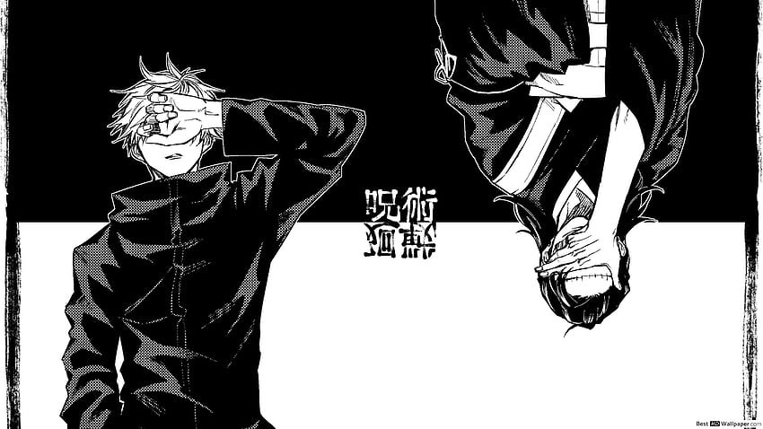
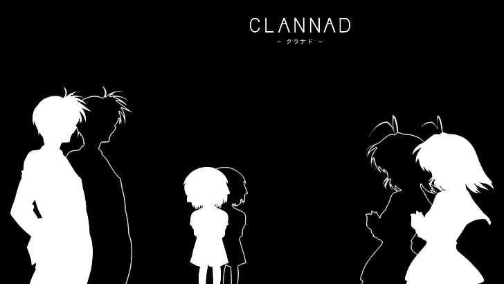

 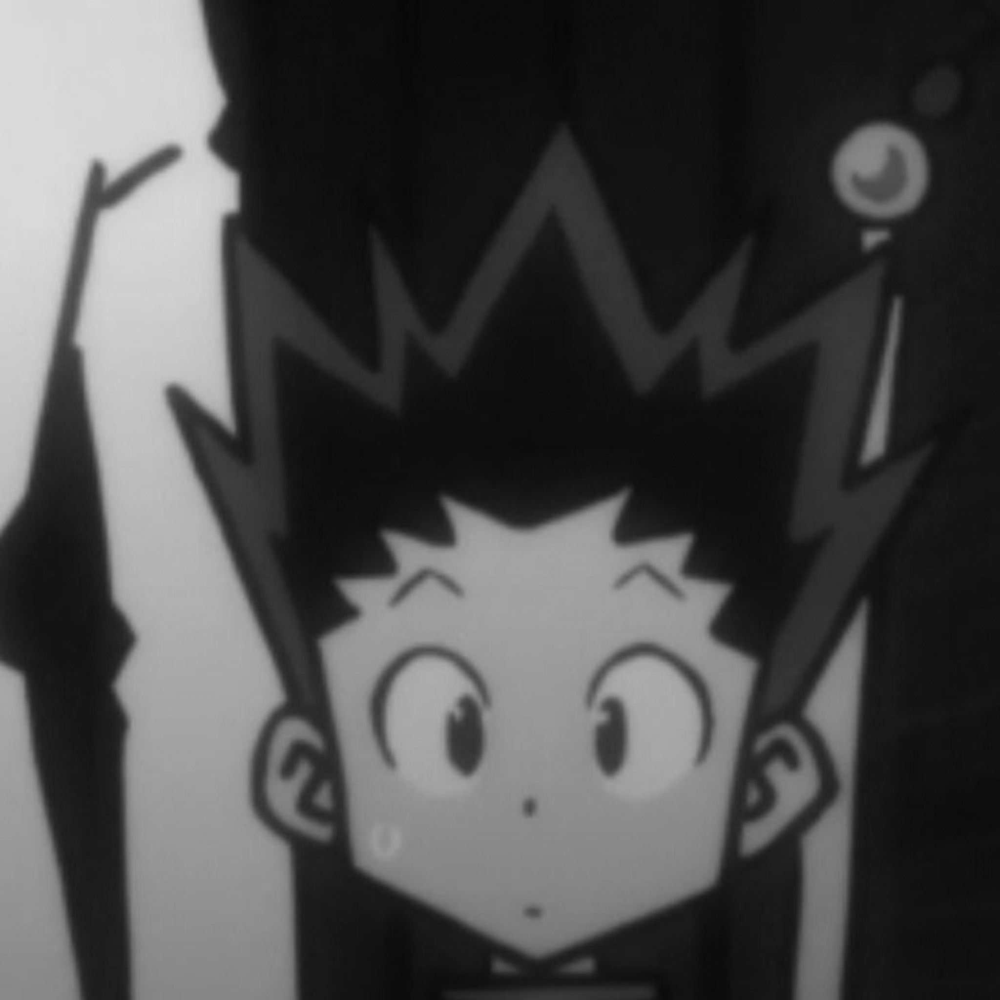
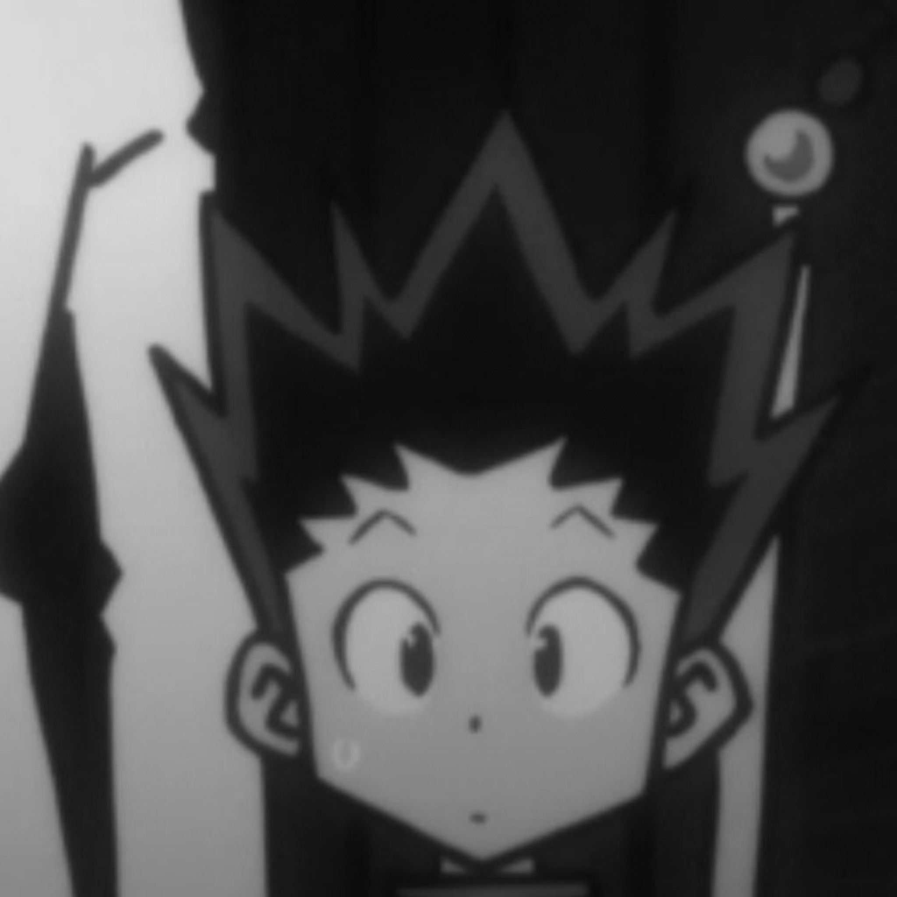


 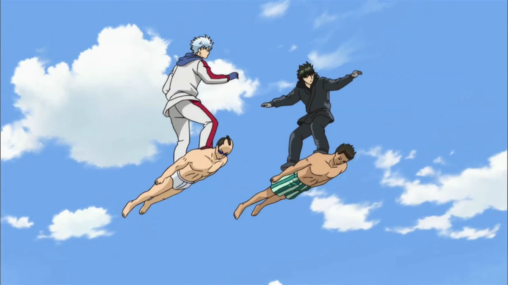
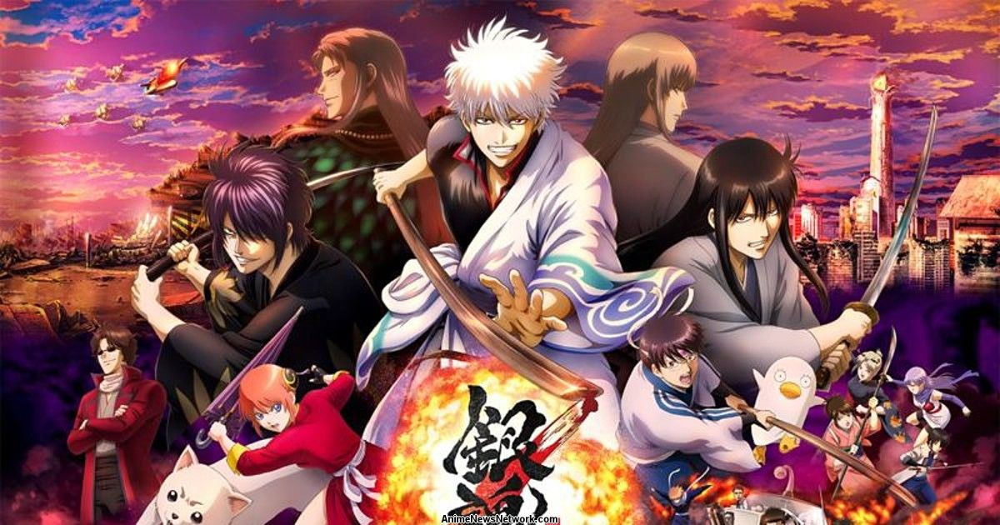
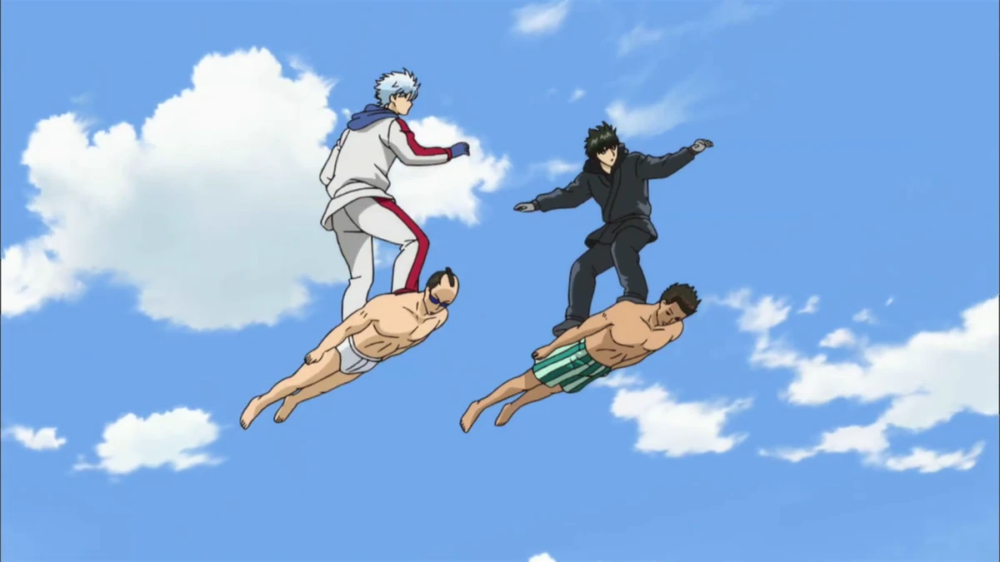
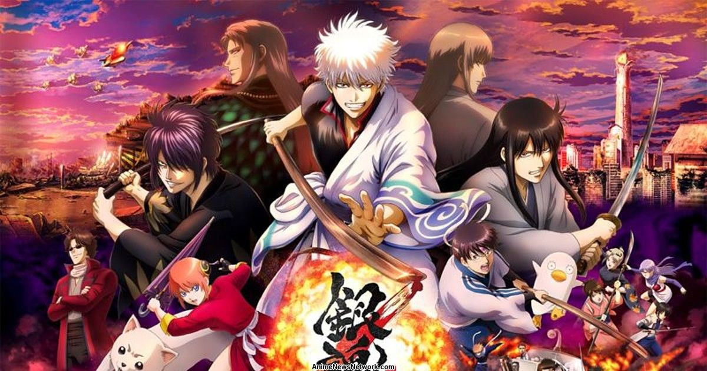


 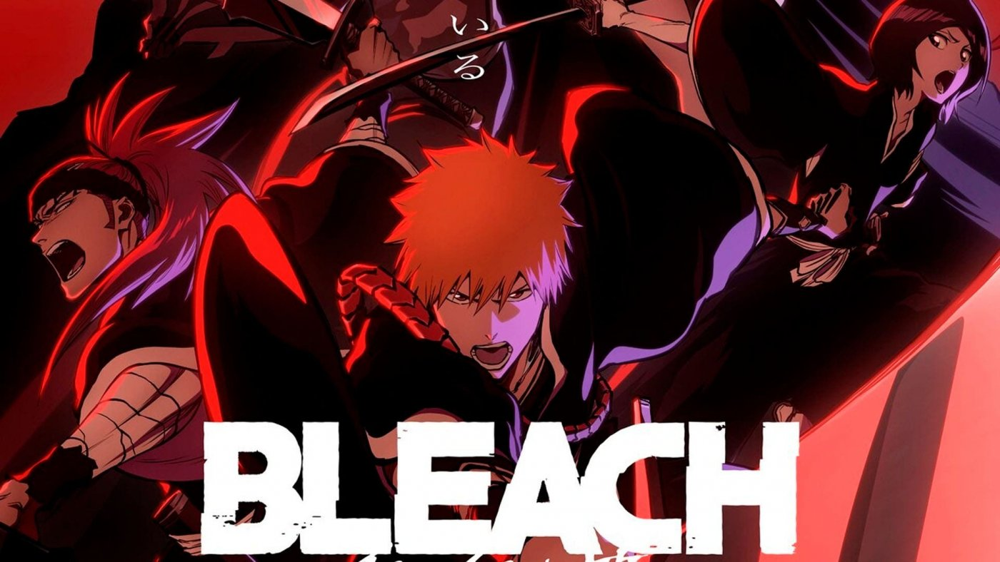
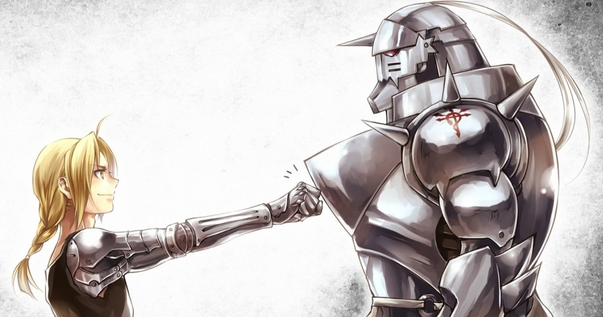
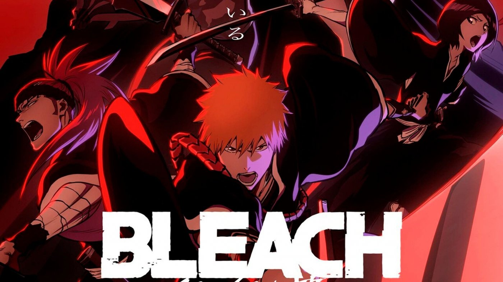
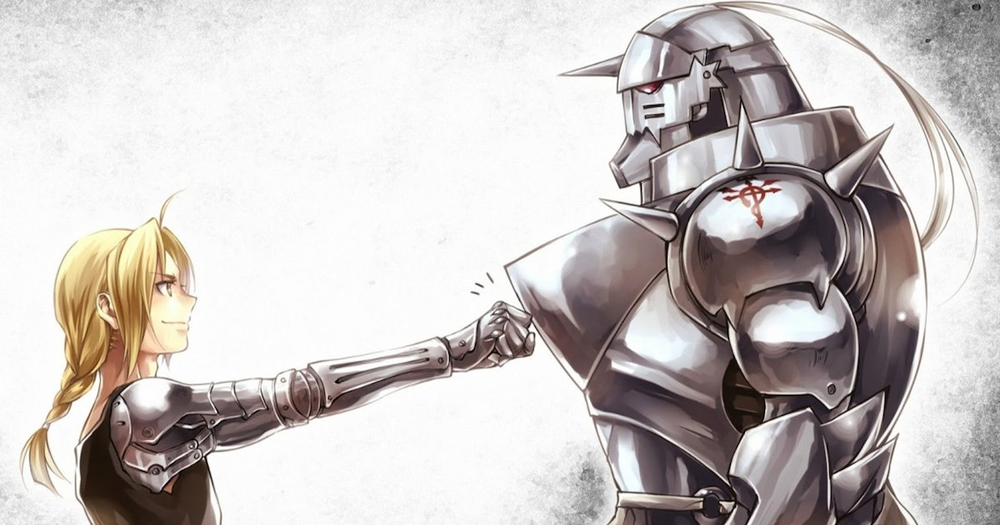